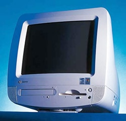

| Photo | Series | Machine | Year Of introduction | CPU Type | RAM | Hard Drive Size | Modem | Cache | Sound card | Graphics Card | Bundled OS |
Bundled Software |
Notes |
|---|---|---|---|---|---|---|---|---|---|---|---|---|---|
| iMac | G3 (Fruit Colours, 1998 - 1999 Model years) | 1998 | PowerPC 7xx Processor, also known as G3 processor (233 MHz (Bondi Blue, 266 or 333 MHz (All other colours)) | 32 MB Stock, Up to 256MB | 4GB (Bondi Blue) 6GB (all other colours) |
10/100 BASE-T Ethernet, 56K Modem) | 32KB L1, 512KB L2 | Unknown | ATi Rage IIc (Bondi Blue 233MHz Launch, 2MB SGRAM) ATI Rage Pro Turbo (6MB SGRAM) |
MacOS 8.1 (233 MHZ Bondi Blue, Eventually replaced with 8.5) MacOS 8.5.1 ( All other models) |
| Photo | Series | Machine | Year Of introduction | CPU Type | RAM | Hard Drive Size | Modem | Cache | Sound card | Graphics Card | Bundled OS |
Bundled Software |
Notes |
|---|---|---|---|---|---|---|---|---|---|---|---|---|---|
| Presario | 4500 | 1997 | 166 Intel Pentium MMX (Dual Voltage Socket 7) |
16 MB Standard, 48 MB Maximum | 2.1GB, 3.2GB, 4.0GB, 6.0GB | 56k, ISDN Modem available in Germany and Netherlands | Unknown | Sound Blaster 16 | S3 ViRGE/DX (375) | Microsoft Windows 95 |
SimCity 2000 Network Edition Microsoft Works 4.0 Apple Quicktime 2.1.2.59 Sprynet The Palace Compaq Internet Setup Microsoft Money 97 Microsoft NetMeet |
||
| Presario | 4808 | 1996? | 200 MHz Intel Pentium, MMX Technology (Likely Dual Voltage Socket 7) |
32 MB EDO Standard, 256 MB Max (EDO SIMM Required) | 4.3GB | 56k | Upgradable to 512k | Unknown* (Went with sound blaster 16) | Unknown (Went With S3 VIrGE) | Microsoft Windows 95 |
Intel Video Capture Utility iPhoto Express Microsoft Money 97 Microsoft Works
Compaq Internet Setup Shockwave The Palace Sprynet
Microsoft Creative Writer 2 Microsoft Encarta 97 Encyclopedia MPEG
Quick Restore |
| Photo | Series | Machine | Year Of introduction | CPU Type | RAM | Hard Drive Size | Modem | Cache | Sound card | Graphics Card | Bundled OS |
Bundled Software |
Notes |
|---|---|---|---|---|---|---|---|---|---|---|---|---|---|
|
Optiplex | GX270 | 2004 | Intel Pentium 4 2.40GHz (PPGA478) | 512MB | 40 | Gigabit Ethernet | 512KB L2 | Unknown | Intel Extreme Graphics 2 (864G IGPU) | Microsoft Windows XP Professional, Windows 2000 Professional | Unknown | Known for extremely high failure rates |
| Photo | Series | Machine | Year Of introduction | CPU Type | RAM | Hard Drive Size | Modem | Cache | Sound card | Graphics Card | Bundled OS |
Bundled Software |
Notes |
|---|---|---|---|---|---|---|---|---|---|---|---|---|---|
|  | Astro | Astro | 1999 | Intel Celeron (400mhz, Socket 370) | 64MB | 4.3GB | 56k | Unknown | Unknown | Intel IGP | Windows 98 Second Edition | Microsoft Works Suite 2000 The Rugrats Movie Activity Challenge(Rugrats Edition only) Rugrats Adventure Game (Rugrats Edition only) Rugrats Paint Shop (Rugrats Edition only) Rugrats Mystery adventures (Rugrats Edition only) Nick-O-Matic Design Factory (Rugrats Edition only) Nickelodeon Accessory CD with Games and Screensavers (Rugrats Edition only) |
There was apparently a Blues Clues edition too, but I cannot find a specs sheet nor advert for it. |
| Images | Series | Machine | Year Of introduction | CPU Type | RAM | Hard Drive Size | Modem | Cache | Sound card | Graphics Card | Bundled OS |
Bundled Software |
Notes |
|---|---|---|---|---|---|---|---|---|---|---|---|---|---|
 |
PowerMate | V Pentium Series | 1997 | Intel Pentium (No MMX, 75, 90, 100, 120 or 133Mhz) (Socket 5) |
8 MB (75, 90, or 100 Mhz version), 16 MB (120 or 133 Mhz), Maximum of 128MB | 540MB, 850MB, 1.08GB, 1.3GB, 1.6GB, 1.6GB | 14.4/28.8 Modem, Optional | 16 KB (Primary, Via CPU), 256 (Secondary, Pipeline Burst Cache) | Unknown | ATi Rage GT | Microsoft MS-DOS 6.22 & Windows For Workgroups Or Windows 95 |
McAfee VirusScan McAfee WebScan CyberMedia FirstAid 95 Deluxe Diagsoft. QA Plus/Pro
Taplink Netscape Navigator Misc graphics/audio utilities additional security measures |
| Images | Series | Machine | Year Of introduction | CPU Type | RAM | Hard Drive Size | Modem | Cache | Sound card | Graphics Card | Bundled OS |
Bundled Software |
Notes |
|---|---|---|---|---|---|---|---|---|---|---|---|---|---|
| Profile | 5.5 | 2005 | Intel Pentium 4 (LGA775 | 512MB | 160GB | Unknown | Unknown | Unknown | Unknown | Microsoft Windows XP Professional | Unknown |